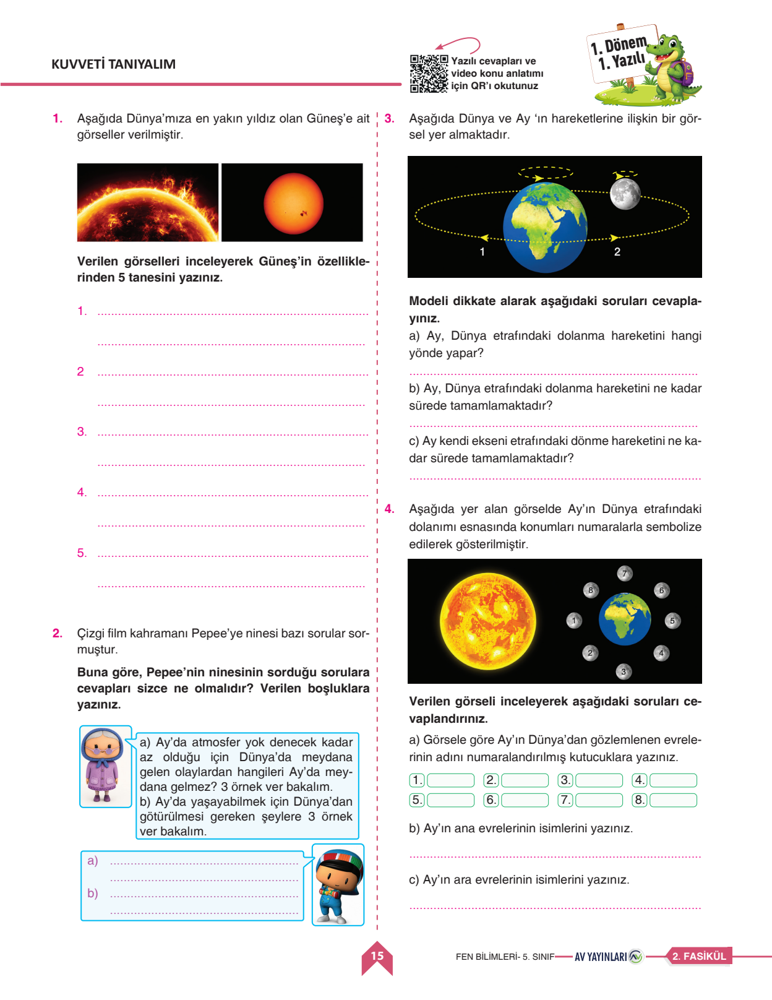
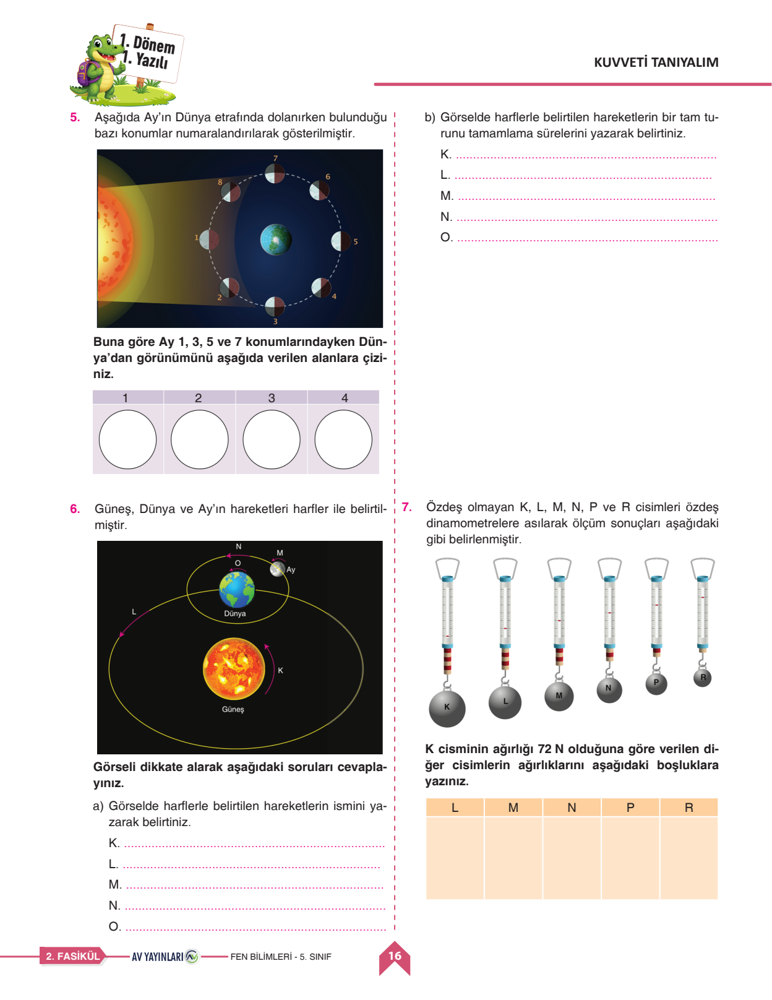
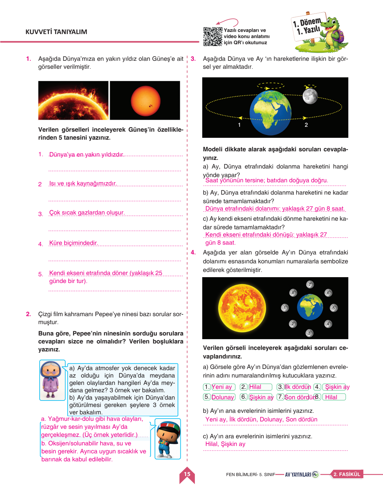
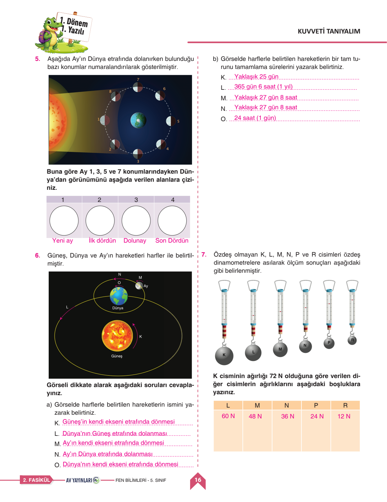

🔬 5. Sınıf Fen Bilimleri 1. Dönem 1. Yazılı
Güneş, Dünya ve Ay'ın Hareketleri • Dinamometre ile Kuvvet Ölçümü • 7 Sorunun Tamamı Çözümlü
0
Mevcut Puan / 100

Soru 1
Güneş'in 5 Temel Özelliği
15 Puan
📌 Öğretmen Çözümü & Model Cevap:
1. Dünya'ya en yakın yıldızdır.
2. Isı ve ışık kaynağımızdır.
3. Sıcak gazlardan (hidrojen ve helyum) oluşur.
4. Şekli küreye benzer.
5. Kendi ekseni etrafında saat yönünün tersine döner (yaklaşık 25 gün).
2. Isı ve ışık kaynağımızdır.
3. Sıcak gazlardan (hidrojen ve helyum) oluşur.
4. Şekli küreye benzer.
5. Kendi ekseni etrafında saat yönünün tersine döner (yaklaşık 25 gün).
Bu sorudan aldığın puan:
Soru 2
Pepee ve Ninesi: Ay'ın Atmosfersizliği ve Yaşam
15 Puan
📌 Öğretmen Çözümü & Model Cevap:
a) Ay'da Meydana Gelmeyen Olaylar:
• Yağmur, kar, fırtına gibi hava olayları gerçekleşmez.
• Rüzgâr oluşmaz.
• Ses yayılmaz (uzay boşluğu).
b) Dünya'dan Götürülmesi Gerekenler:
• Oksijen tüpü / hava
• Su ve besin maddeleri
• Özel koruyucu uzay giysisi
• Yağmur, kar, fırtına gibi hava olayları gerçekleşmez.
• Rüzgâr oluşmaz.
• Ses yayılmaz (uzay boşluğu).
b) Dünya'dan Götürülmesi Gerekenler:
• Oksijen tüpü / hava
• Su ve besin maddeleri
• Özel koruyucu uzay giysisi
Bu sorudan aldığın puan:
Soru 3
Dünya ve Ay'ın Hareket Süreleri
15 Puan
📌 Öğretmen Çözümü & Model Cevap:
a) Dolanma Yönü: Saat yönünün tersine (batıdan doğuya doğru).
b) Dünya Etrafında Dolanma Süresi: Yaklaşık 27 gün 8 saat.
c) Kendi Ekseni Etrafında Dönme Süresi: Yaklaşık 27 gün 8 saat.
Not: İki süre eşit olduğu için Dünya'dan Ay'ın hep aynı yüzü görünür!
b) Dünya Etrafında Dolanma Süresi: Yaklaşık 27 gün 8 saat.
c) Kendi Ekseni Etrafında Dönme Süresi: Yaklaşık 27 gün 8 saat.
Not: İki süre eşit olduğu için Dünya'dan Ay'ın hep aynı yüzü görünür!
Bu sorudan aldığın puan:
Soru 4
Ay'ın Evreleri (Ana ve Ara Evreler)
15 Puan
📌 Öğretmen Çözümü & Model Cevap:
a) Kutucuklar: 1: Yeni Ay, 2: Hilal, 3: İlk Dördün, 4: Şişkin Ay, 5: Dolunay, 6: Şişkin Ay, 7: Son Dördün, 8: Hilal
b) Ana Evreler: Yeni Ay, İlk Dördün, Dolunay, Son Dördün
c) Ara Evreler: Hilal, Şişkin Ay
b) Ana Evreler: Yeni Ay, İlk Dördün, Dolunay, Son Dördün
c) Ara Evreler: Hilal, Şişkin Ay
Bu sorudan aldığın puan:

Soru 5
Ay'ın 1, 3, 5, 7 Konumlarındaki Görünümü
10 Puan
📌 Öğretmen Çözümü & Model Cevap:
• 1 Konumu: Yeni Ay (Karanlık görünür, Dünya'dan seçilemez).
• 3 Konumu: İlk Dördün (Ay'ın sağ yarısı aydınlık, düz 'D' harfi).
• 5 Konumu: Dolunay (Ay'ın Dünya'ya bakan yüzü tamamen aydınlık daire).
• 7 Konumu: Son Dördün (Ay'ın sol yarısı aydınlık, ters 'D' harfi).
• 3 Konumu: İlk Dördün (Ay'ın sağ yarısı aydınlık, düz 'D' harfi).
• 5 Konumu: Dolunay (Ay'ın Dünya'ya bakan yüzü tamamen aydınlık daire).
• 7 Konumu: Son Dördün (Ay'ın sol yarısı aydınlık, ters 'D' harfi).
Bu sorudan aldığın puan:
Soru 6
Güneş, Dünya ve Ay'ın Hareket Süreleri
15 Puan
📌 Öğretmen Çözümü & Model Cevap:
Hareketler ve Tamamlanma Süreleri:
• K: Güneş'in kendi ekseninde dönmesi → Yaklaşık 25 gün
• L: Dünya'nın Güneş etrafında dolanması → 365 gün 6 saat (1 yıl)
• M: Ay'ın kendi ekseninde dönmesi → Yaklaşık 27 gün 8 saat
• N: Ay'ın Dünya etrafında dolanması → Yaklaşık 27 gün 8 saat
• O: Dünya'nın kendi ekseninde dönmesi → 24 saat (1 gün)
• K: Güneş'in kendi ekseninde dönmesi → Yaklaşık 25 gün
• L: Dünya'nın Güneş etrafında dolanması → 365 gün 6 saat (1 yıl)
• M: Ay'ın kendi ekseninde dönmesi → Yaklaşık 27 gün 8 saat
• N: Ay'ın Dünya etrafında dolanması → Yaklaşık 27 gün 8 saat
• O: Dünya'nın kendi ekseninde dönmesi → 24 saat (1 gün)
Bu sorudan aldığın puan:
Soru 7
Özdeş Dinamometrelerde Ağırlık Hesaplama
15 Puan
📌 Öğretmen Çözümü & Model Cevap:
Çözüm Adımları:
K cismi 6 bölme uzatmış ve 72 N ise: 1 bölme = 72 ÷ 6 = 12 N'dur.
• L (5 bölme): 5 × 12 = 60 N
• M (4 bölme): 4 × 12 = 48 N
• N (3 bölme): 3 × 12 = 36 N
• P (2 bölme): 2 × 12 = 24 N
• R (1 bölme): 1 × 12 = 12 N
K cismi 6 bölme uzatmış ve 72 N ise: 1 bölme = 72 ÷ 6 = 12 N'dur.
• L (5 bölme): 5 × 12 = 60 N
• M (4 bölme): 4 × 12 = 48 N
• N (3 bölme): 3 × 12 = 36 N
• P (2 bölme): 2 × 12 = 24 N
• R (1 bölme): 1 × 12 = 12 N
Bu sorudan aldığın puan:


☀️ 1. Güneş'in Temel Özellikleri
- Şekli küredir, %73 Hidrojen ve %25 Helyum gazlarından oluşur.
- Dünyamızın temel ısı ve ışık kaynağıdır.
- Kendi ekseni etrafında saat yönünün tersine döner (yaklaşık 25 gün).
🌑 2. Ay'ın Evreleri
- Ana Evreler: Yeni Ay → İlk Dördün → Dolunay → Son Dördün.
- Ara Evreler: Hilal ve Şişkin Ay.
- İki ana evre arası yaklaşık 1 haftadır (7 gün).
⚖️ 3. Dinamometre
- Kuvvet ölçüm aracıdır, birimi Newton (N)'dur.
- Yayın uzama miktarı cismin ağırlığıyla doğru orantılıdır.